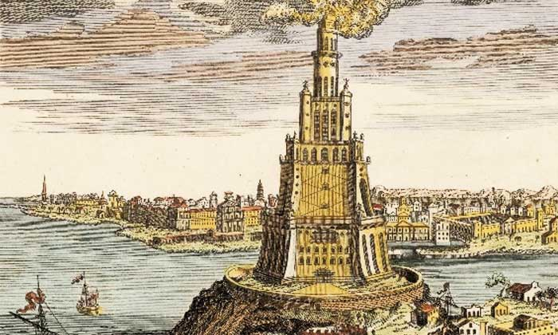

İskenderiye Feneri, Mısır'ın İskenderiye şehrinde inşa edilmiş; ancak günümüzde bulunmayan, Dünyanın Yedi Harikası'ndan biri ve tarihte inşa edilmiş deniz fenerlerinin en yüksek olanı. İnşaası MÖ 285-246 yılları arasında süren fener, bu devletin ilk iki kralı Ptolemy (Batlamyus) ve Soter tarafından Mısır'da İskenderiye Limanı'nın karşısındaki Pharos Adası üzerine yaptırılmıştı.
Üç bölümden oluşan fenerin mimarı Knidoslu Sostratus'tur. Kaidesi ile birlikte 135 metre yüksekliğinde olan fener, beyaz mermerden yapılmıştı. Tepesinde bulunan, tunçtan yapılmış büyük bir ayna 70 kilometre uzaklıktan görülüyor ve limana giren gemilere rehberlik ediyordu. Alt bölümü dikdörtgen şeklinde ve yaklaşık 55 metre yüksekliğindeydi. Orta bölüm, yukarıya doğru giden rampası olan bir silindir şeklindeydi. Yaklaşık 27 metre yüksekliğindeydi. Üst bölüm ise silindir şeklindeydi ve üzerinde alevin bulunduğu bir odası vardı.Üst kısmı MS 955 yılında bir deprem ve fırtınada kopan fenerin gövde kısmı da 1302'de başka bir depremde yıkıldı. 1500 yılında ise bu yapıya ait kalıntılar tamamen yok oldu.
